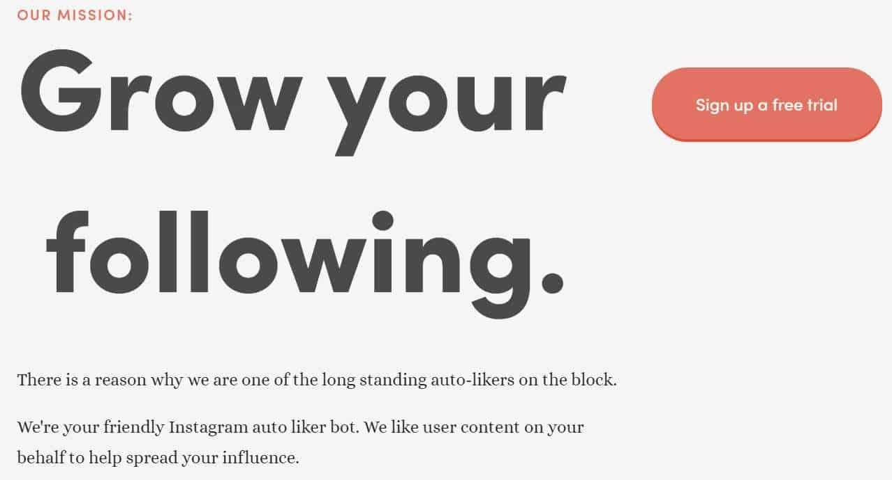

Everyone wants to boost the stats on their Instagram accounts. You might have been tempted to buy Instagram likes from one of the many vendors online. But is buying Instagram like safe? Will Instagram ban your account? Is it a good idea?
In this article, I’ll do my best to answer those questions, and more. If you’re struggling with your Instagram account, unable to increase the numbers, then this article is for you.
To start off, I want to make one thing clear.
Is Buying Instagram Likes Safe?
The truth is buying Instagram likes is, for the most part, safe. The absolute worst thing that could happen is Instagram removes the new accounts from your list of followers.
But the chances of that happening are very low. They usually won’t ban or block your account for buying likes. After all, if your profile is public, anyone can like the content. It’s out of their control.
In other words, if you want to add some more likes to a post that’s underperforming then that’s your decision. It’s not dangerous. There’s no need to worry if you’re going to be banned. You won’t.
Now is it good for your brand? That’s another issue.
Should You Buy Instagram Likes?
Although buying Instagram likes is safe, it’s not something we really recommend, for a number of reasons.
For one, Instagram is good at detecting unusual activity. If usually get a handful of likes on your pictures, and then suddenly thousands are coming in, that’s a little unusual.
Secondly, it’s challenging to find a reputable seller. It’s basically impossible to sell “Real” Instagram likes unless you’re in contact with thousands of Instagram users. What ends up happening is you get a ton of likes from fake accounts, and that does nothing useful for your brand. It’s spam.
It might make you seem more popular, but once someone clicks on the list of likes, they’ll see most of the accounts are fake.
Engagement Rates & Sponsorships:
You have probably heard about Instagram engagement rates. The problem is it’s not an exact formula, and each tool uses its own special formula to calculate the rate.
Either way, the engagement rate is one of the most important factors when it comes to Instagram posts. In short, Instagram will rank posts that have a good engagement rate higher in their feeds.
The factors that we know that go into the formula are the number of followers, number of posts, number of comments, and number of likes. One of the most popular ways to calculate your engagement rate is by combined likes and comments divided by your followers.
What does this have to do with buying Instagram likes? The thing is if you buy Instagram likes, then you’ll need to buy followers and comments to keep the engagement rate balanced. Only buying likes creates a weird engagement rate.
Did you know that (if your Instagram profile is public) anyone can check your engagement rates? And that’s one of the first things people do when considering your account for sponsorship.
In other words, if you buy Instagram likes, that temporarily increases your engagement rates. But when you stop buying them, it drops back down to zero. Not to mention you have to buy followers and comments too.
Overall, not the best longterm solution. People can easily spot fake likes.
For more information, read this article about engagement rates.
What Are Auto Likers?
There’s a specific type of Instagram bot called an auto liker. These tools are designed to browse through hashtags and other filters and simply leave a Like on-target content. They can be useful in a number of ways.
For one, auto likers are generally safer than bots because liking content is less spam-like than the other automation services (follow, unfollow, comment, etc). It’s also relatively harmless, like liking someone’s status on Facebook.
The idea behind the auto likers is to send out a kind of ping to another person. Chances are when someone likes your picture on Instagram, you’ll take a look at their profile. Browse through some pictures, and maybe hit the like button in return.
Auto likers tend to work better on smaller accounts, where the owners are more aware of who’s interacting with them and appreciate each new fan. So when you use an auto liker it sends out a lot of likes, which generates interest for you.
Right off the bat, there are two decent auto likers that come to mind. One of them is an Instagram bot based on machine-learning AI and the other is a simple one-service tool.
1 – Kenji
Kenji is a really interesting platform. They offer a wide range of Instagram automation services, such as auto-like, comment, follow & unfollow, and more.
What makes this tool cool is it uses machine-learning AI to create unique interaction patterns that Instagram will never be able to detect. In other words, it’s very safe.
2 – RoboLike

With six years of run-time, Robolike is one of the oldest auto-likers out there.
How it works:
You choose the hashtags you want to target and then the bot will like images that contain those hashtags. That’s it. If everything works according to plan, the bot should generate a lot of exposure for you.
If you’re looking to buy Instagram likes, either pick one of these or read our other post on how to get Instagram likes.
Not Getting Enough Likes? Consider This:
I know it’s not the most exciting strategy but the best way to get more Instagram likes is to upload content regularly and be as genuine as possible. Inevitably, some posts will perform better than others, and it takes time to discover what works. Once you do, the likes will keep coming in.
We mentioned earlier you need to focus on organic growth. The problem is organic growth involves a lot of tedious tasks that you may not have the time or patience for.
These are simple tasks such as liking other user’s content, following them, sending them messages, replying to comments, creating content, adding relevant hashtags, and more. There’s a lot that goes into creating a successful Instagram brand.
To me, and I think most social media marketers will agree with me here, content is the most important factor. Creating the absolute best images for Instagram is not easy – that’s for sure. You not only have to create original work but also come up with the right descriptions and hashtags.
Want to know how to optimize your hashtags? Read this.
Thankfully, you don’t have to be a world-famous photographer to build an audience on Instagram. There are other types of content you can create, such as short videos, Stories, and even live-stream, to name a few. Create a combination of these forms of visual content and you’ll have no problem getting Instagram likes.
Can You Upload Pictures From Your Computer to Instagram?
As a matter of fact, Instagram doesn’t officially let members upload content from their computer to Instagram. But there are lots of workarounds. For example, uploading to Facebook and then “Sharing” with your Instagram. The option is usually available for Facebook pages.
And as you might expect, there are tons of tools that solve the problem. One of our favorites is called Later. The platform creates a really cool grid-calendar that not only allows you to upload posts from your computer but also schedule posts.
If you’re obsessed with taking photos and have hard drives full of images, Later makes it easy to upload all those to Instagram. Then it’s a just matter of filling in the descriptions and hashtags. Boom, no need to worry about what to upload anymore.
Schedule your content far into the future so you always have content hitting Instagram. This is one of the absolute best ways to organically grow an Instagram account.
In a Nutshell:
Buying Instagram likes isn’t the best idea. Chances are they won’t damage your account or get you banned but they won’t do much good, either. It’s a grey-area.
Overall, if you’re planning to buy Instagram likes, the best way to do is through organic growth. Either put the effort into creating awesome images and manually completing all the usual social media marketer tasks or use an Instagram automation tool.
Using an Instagram automation tool or an auto-liker can save you a lot of time. Granted, not all of them are created equal. There are some that you should avoid at all costs.
There are Risks!
You also need to understand the risks. For example, if a tool uses the word “Gram” or something similar in their name, there’s a chance they’ll be shut down. It’s always best to stick to reputable tools that have a history of working within Instagram’s guidelines.
Having said that, they can be a huge benefit to your business. The ones we mentioned in this article, Kenji and Roboliker are the best for quick automation.
On the other hand, we recommend a number of other tools too. Check out this list for our recommended Instagram automation tools.
Thanks for taking the time to read this post. I hope now you know more about buying Instagram likes and you can make the right decision for your profile.